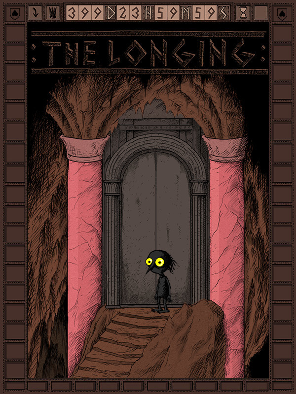

:THE LONGING:
:THE LONGING:
Details
|  | |
| Playtime | 4h 17m 0s |
| Last Activity | Never |
| Added | 12/30/2023 6:40:47 |
| Modified | 12/30/2023 7:01:10 |
| Completion Status | Played |
| Library | Steam |
| Source | Steam |
| Platform | PC (Windows) |
| Release Date | 3/5/2020 |
| Community Score | 69 |
| Critic Score | 70 |
| User Score | |
| Genre | Adventure Indie Puzzle Role-playing (RPG) Simulator |
| Developer | Studio Seufz |
| Publisher | Application Systems Heidelberg SmashGames |
| Feature | Single Player |
| Links | Steam Official YouTube GOG Twitch |
| Tag | |
Description
Unusual mix of an adventure and an idle-game.
Play as a lonely Shade, the last servant of a king who once ruled an underground kingdom. The king's powers have faded and he falls asleep for 400 days to regain his might. It is your duty to stay in the earthen palace until he awakens.
As soon as you start, the game inevitably counts down the 400 days - even when you stop playing and exit the game.
It is now up to you to decide what to do with your solitary existence beneath the soil. Don't stress yourself, you have plenty of time.
Choose your playing style
Start the game and simply come back after 400 days to see how it ends. You actually don't have to play the game at all. But the Shade will be even more lonely without you.
Or explore the caves and collect items for your comfortable underground living room. Just send the Shade to take a stroll - the walking speed is slow, but luckily there is no need to hurry.

Read tons of classic literature from Nietzsche to Moby Dick right in the game - or at least have the shade read them. After all, time goes by faster if you learn to keep your mind occupied. (The little Shade in the game finds ONLY English books for now.)

Ignore the king's commands and advance to the outer regions the cave. It will be a long and dangerous journey into darkness...

Features
- Slow exploration of a vast, hand-drawn cave.
- Atmospheric Dungeon Synth soundtrack.
- Various endings.
- Lots of well hidden secrets.
- Time-based puzzles.
- A lonely but cute protagonist.